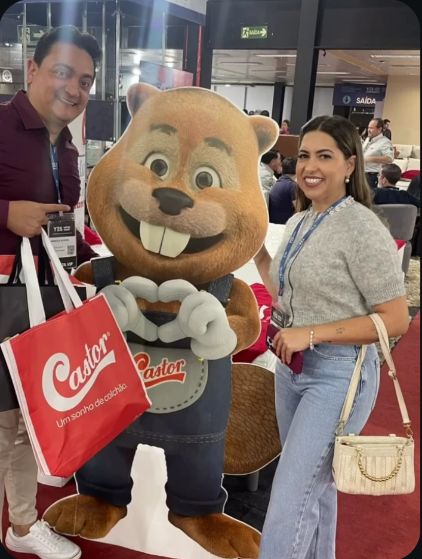
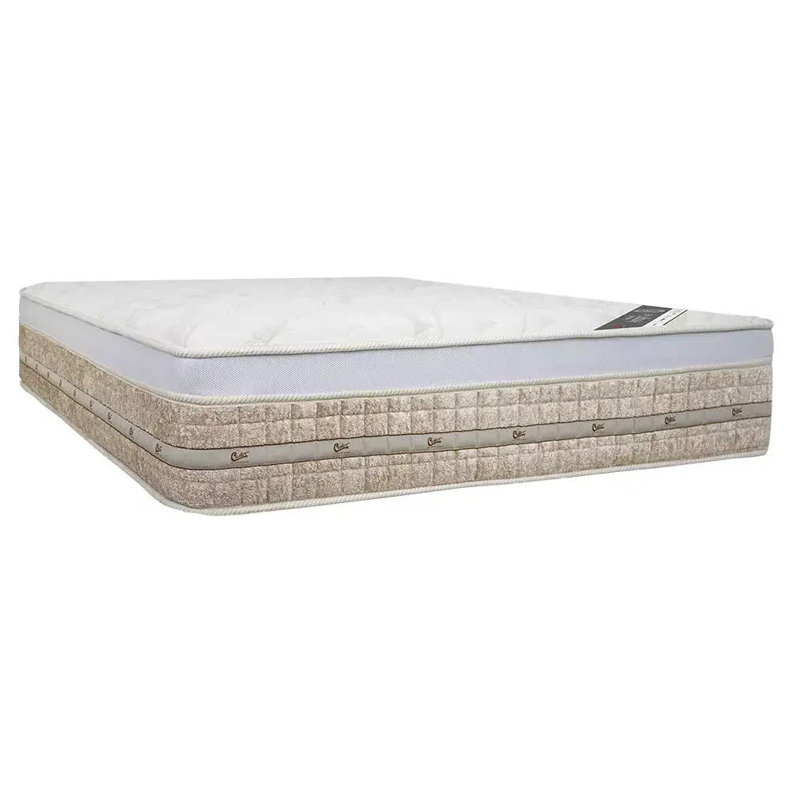

Um bom dia
começa com
uma boa noite.
Conforto se sente. Confiança se constrói.
Encontre seu próximo colchão com quem recebe você de perto, aqui em São Sebastião do Paraíso.

tem gente que cuida.
Três marcas.
Seu jeito de descansar.
O conforto tem nome.
Castor.
Uma marca que faz parte da nossa seleção e merece lugar de destaque na sua próxima escolha.
De molas ensacadas a opções em espuma, conheça diferentes construções e encontre com a gente o modelo que faz sentido para você.
Explorar a seleção Castor
Seu colchão.
Do seu jeito.
Explore referências das marcas que trabalhamos. Converse com a loja para confirmar modelos, medidas, valores e disponibilidade.
Imagens oficiais dos fabricantes. A seleção apresenta referências de catálogo; a oferta da loja é confirmada no atendimento.
A melhor escolha
começa com
você.
Cada pessoa descansa de um jeito. Conte um pouco do que procura e leve suas preferências para a nossa conversa.
Uma loja de colchões.
Uma relação de confiança.
O colchão vai para a sua casa.
A atenção começa na nossa loja.
Na Paraíso dos Colchões, a escolha começa com uma conversa: entender o espaço, conhecer as opções e experimentar o conforto.
Estamos no Centro de São Sebastião do Paraíso, com marcas como Castor, Ortobom e Probel. Venha conhecer a seleção e tirar suas dúvidas pessoalmente.
Acompanhe a loja no InstagramPara escolher
com tranquilidade.
Como saber qual colchão é melhor para mim?
Comece pelo tamanho do espaço e pelo conforto que você prefere. Depois, experimente as opções e converse com a equipe sobre as características de cada modelo. O guia acima ajuda a organizar essa conversa.
Vocês trabalham com Castor, Ortobom e Probel?
Sim. Essas são as três marcas desta seleção, com destaque para a Castor. Consulte a equipe para saber quais modelos e medidas estão disponíveis na loja.
Os modelos do site estão disponíveis na loja?
O site apresenta referências dos catálogos oficiais. Confirme com a equipe o estoque atual, as medidas disponíveis e os valores antes de decidir.
Posso consultar entrega, pagamento e garantia?
Sim. A equipe informa as condições de entrega e pagamento e a garantia aplicável ao produto escolhido durante o atendimento.
Posso ir à loja experimentar?
Venha à Rua Doutor Placidino Brigagão, 1161, Centro, em São Sebastião do Paraíso. Entre em contato antes da visita para confirmar o horário de atendimento.
Seu próximo descanso
está logo aqui.
Rua Doutor Placidino Brigagão, 1161Centro · São Sebastião do Paraíso · MG
Vamos encontrar seu conforto?
(35) 3558-1188@paraisodoscolchoesssp Confirme o horário com a equipe antes de visitar.